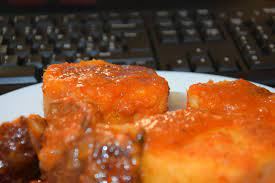

Yam Porridge

Description
Yam porridge is a delicacy that is especially simple to make and very enjoyable indeed.
Ingredients
- yam
- water
- salt
- pepper
- palm oil
- seasoning cubes
- crayfish
Steps
- peel yam and cut into cubes
- wash and put in pot and add water to the level of yam in the pot
- put the pot on the stove and bring to boil
- add the rest of the ingredients and cook till the yam is tender
- serve hot